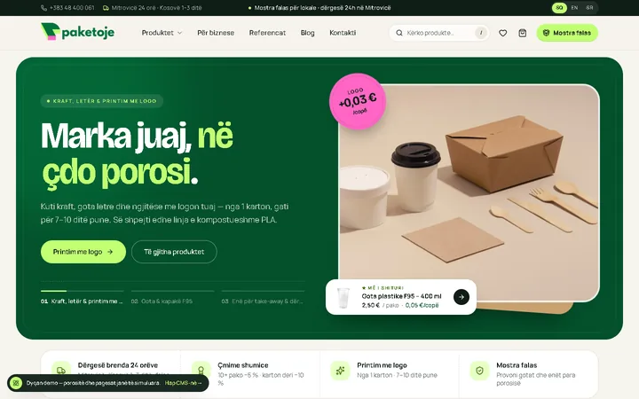
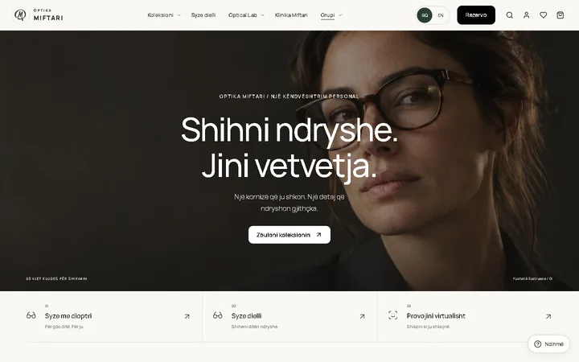

PROJEKTE / VERÖFFENTLICHTE ARBEITEN
Arbeit, die sichtbar wird.
Websites und digitale Erlebnisse, die wir entwickelt haben. Wählen Sie ein Projekt, um es live zu sehen.

PLATTFORM · IMMOBILIEN
verkaufeimmobilie.de
Immobilienbewertung und der direkte Weg zum Experten. (öffnet in einem neuen Tab)
WEBSITE · SOLARENERGIE
RATA Solar
Produkte, Rechner und Angebotsanfrage. (öffnet in einem neuen Tab)
WEBSITE · PRODUKTION
KoBags Group
Individuelle Taschen und ein Designstudio. (öffnet in einem neuen Tab)
E-COMMERCE · VERPACKUNG
Paketoje
Katalog und Bestellerlebnis für Verpackungen im eigenen Markenauftritt. (öffnet in einem neuen Tab)
WEBSITE · OPTIK
Optika Miftari
Brillenkollektionen, Optiklabor und ein klarer Weg zur Terminbuchung. (öffnet in einem neuen Tab)MÖGLICHKEITEN